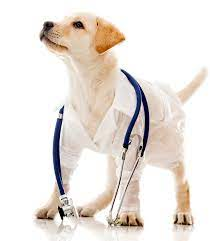

Our professional dog grooming services vary according to the breed of your pet and owner preference. For cats, this includes a bath, nail clipping, brushing and fur trimming where needed. For dogs, this includes fur trimming, bath, nail clipping, and brushing. It is important to take your pet to the vet’s for professional nail trimming so as to avoid injuring your pet. Grooming keeps your pet clean, discourages pest infestations and also makes your pet’s fur easier to manage at home. The grooming process may be a challenge for dogs and cats novel to grooming. It is therefore important to get your pet used to petting, brushing, and other human contacts to make the process easier for them. All dogs need regular brushing at home (even short-haired breeds) to keep their coats clean, tangle-free, and tidy. Brushing regularly also helps manage shedding, so there is less fur left behind around your home.
We offer services for pets, farm animals and even wildlife. Our founder used to work at KWS (Kenya Wildlife Service) before opening the small animal practice. The registered ambulance ensures save and quick transport in emergencies. You need a house visit - we are just a call away. The clinic has one of the few digital x-rays in the country and all other necessary tools to ensure excellent care for your pet. We have fixed prices for all our services.